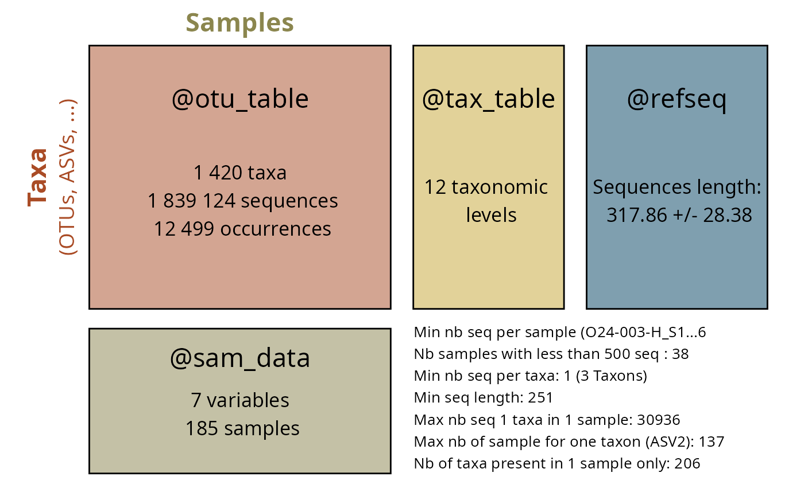
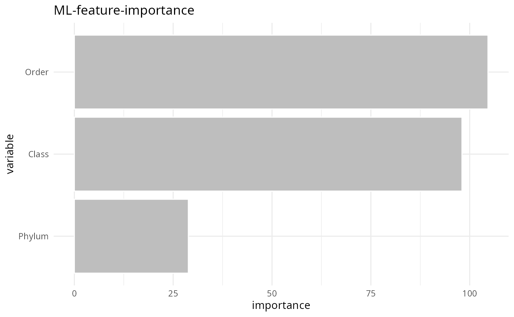

Explore phyloseq data
library(MiscMetabar)
data(data_fungi)
summary_plot_pq(data_fungi)
Explore samples metadata
summarytools::dfSummary(sam_tab)
datawizard::data_codebook(sam_tab)
pillar::glimpse(sam_tab)
#> Warning in class(x) <- tibble_class: Setting class(x) to multiple strings
#> ("tbl_df", "tbl", ...); result will no longer be an S4 object
report::report_sample(data_fungi@sam_data, select = c("Height", "Time"), by = "Tree_name")
pointblank::scan_data(sam_tab, sections = "OVSCMI")
#> Warning in class(x) <- tibble_class: Setting class(x) to multiple strings
#> ("tbl_df", "tbl", ...); result will no longer be an S4 object
pointblank::create_informant(
tbl = sam_tab,
tbl_name = "Sample data",
label = "data_fungi"
)
gtExtras::gt_plt_summary(sam_tab)
#> Warning in geom_point(data = NULL, aes(x = rng_vals[1], y = 1), color = "transparent", : All aesthetics have length 1, but the data has 185 rows.
#> ℹ Please consider using `annotate()` or provide this layer with data containing
#> a single row.
#> Warning in geom_point(data = NULL, aes(x = rng_vals[2], y = 1), color = "transparent", : All aesthetics have length 1, but the data has 185 rows.
#> ℹ Please consider using `annotate()` or provide this layer with data containing
#> a single row.
#> Warning in geom_point(data = NULL, aes(x = rng_vals[1], y = 1), color = "transparent", : All aesthetics have length 1, but the data has 162 rows.
#> ℹ Please consider using `annotate()` or provide this layer with data containing
#> a single row.
#> Warning in geom_point(data = NULL, aes(x = rng_vals[2], y = 1), color = "transparent", : All aesthetics have length 1, but the data has 162 rows.
#> ℹ Please consider using `annotate()` or provide this layer with data containing
#> a single row.Explore taxonomic data
summarytools::dfSummary(tax_tab)
datawizard::data_codebook(tax_tab)
#> Warning: The table contains very wide columns that don't fit into the available
#> display-width of the console. Splitting tables into multiple parts did
#> not have the desired effect.
pillar::glimpse(tax_tab)
pointblank::scan_data(tax_tab, sections = "OVSCM")
pointblank::create_informant(
tbl = tax_tab,
tbl_name = "Taxonomic table",
label = "data_fungi"
)
gtExtras::gt_plt_summary(tax_tab)
fungi_order <- tax_glom(data_fungi, taxrank = "Order")
taxa_names(fungi_order) <- fungi_order@tax_table[, "Order"]
heatmap(fungi_order@otu_table)
Report Session information
report::report(sessionInfo())
#> Warning in utils::citation(pkg_name): could not determine year for
#> 'MiscMetabar' from package DESCRIPTION file